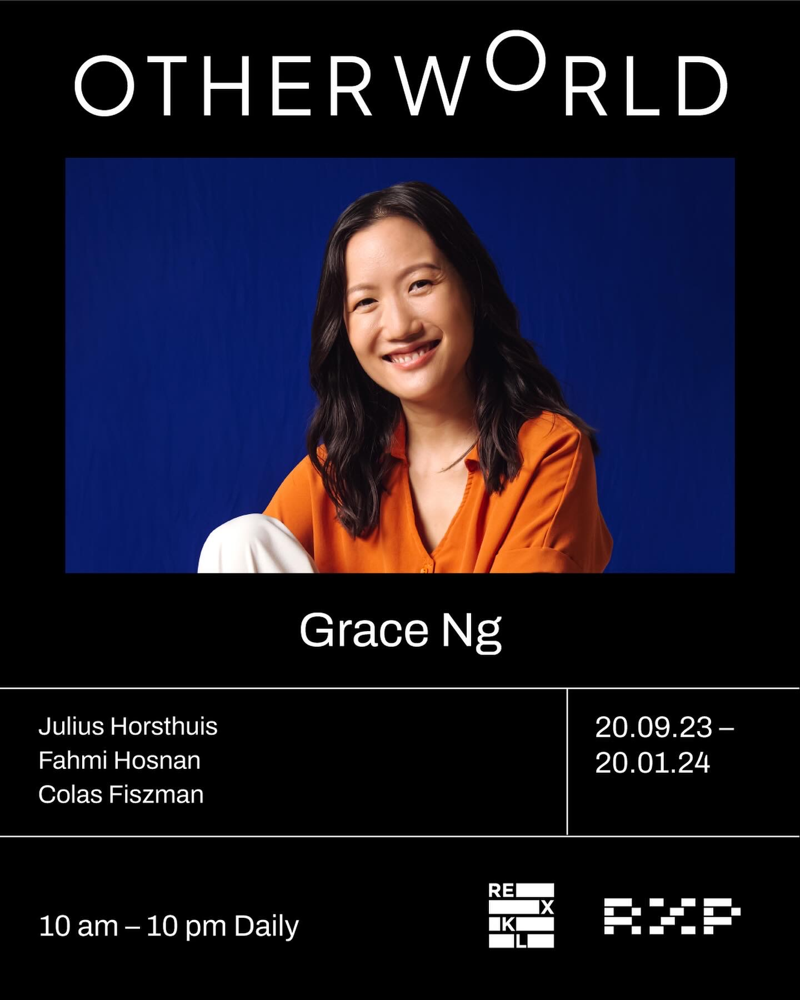

← Back to Work
Annihilation / REXPERIENCE: The Otherworld
Motion Capture / Interdisciplinary Performance

Overview
Annihilation is a motion-capture dance performance. REXPERIENCE: The Otherworld is the larger exhibition it relates to. This page covers Grace's work on Annihilation. [PLACEHOLDER: Confirm how Annihilation relates to the exhibition]
Creative Vision
An interdisciplinary performance bringing together dance, music, visual art and motion-capture technology.
Grace's Contribution
- Took part in early motion-capture suit testing
- Collaborated with musicians and visual artists on the opening performance
- Developed the choreography
- Sourced the dancers
- Organised rehearsals
- Managed schedules and payments
Selected Imagery

Outcomes
[PLACEHOLDER: Add outcomes only if confirmed]